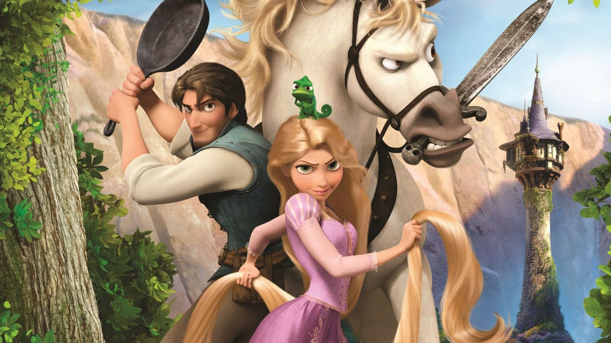

About Rapunzel
Rapunzel is amazing! She's a badass woman with maigcal hair who got locked up in a tower. She wanted to see the lights so escaped and made a pal named Flynn Rider (aka Eugene) who joined her on her journey to the castle where she found her real family and discovered she's a real life princess!
Rapunzel and her friends
Rapunzel's Characteristics
- She has magical hair
- She's super brave and determined
- She's excellent at painting and has a lovely singing voice
Friends
Rapunzel makes friends with literally anyone- including an angry horse, a lizard and a load of scary drunk giants in a bar. She ends up marrying Flynn Rider aka Eugene and its super cute.